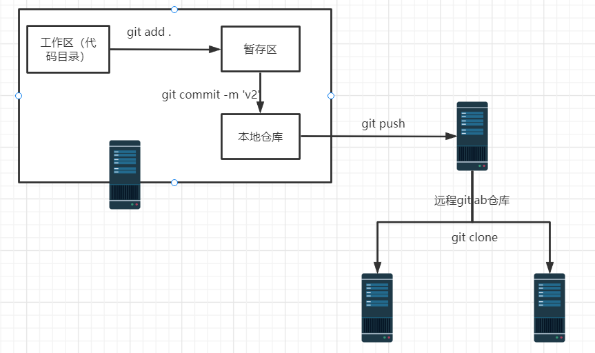

本文主要总结了gitlab代码仓库的部署、配置、常用命令和数据备份，Jenkins安装和部署代码的过程，pipline的使用方法，Jenkins配合sonaqube测试代码。
gitlab部署 需要软件包：policycoreutils openssh-server openssh-clients postfix
国内安装包地址：https://mirrors.tuna.tsinghua.edu.cn/gitlab-ce/yum/el7/
https://mirrors.tuna.tsinghua.edu.cn/gitlab-ce/ubuntu/pool/bionic/main/g/gitlab-ce/ 目录
/etc/gitlab #配置文件目录
/run/gitlab #运行 pid 目录
/opt/gitlab #安装目录
/var/opt/gitlab #数据目录
/var/log/gitlab #日志目录
修改配置
/etc/gitlab/gitlab.rb
external_url 'http://本机IP' 'smtp_enable' ] = true 'smtp_address' ] = "smtp.qq.com" 'smtp_port' ] = 465 'smtp_user_name' ] = "" 'smtp_password' ] = "自己生成" 'smtp_domain' ] = "如qq.com" 'smtp_authentication' ] = :login gitlab_rails['smtp_enable_starttls_auto' ] = true 'smtp_tls' ] = true 'gitlab_email_from' ] = "邮箱" "git_user_email" ] = "邮箱"
加载配置初始化服务
每次改完都要执行
成功后由以下提示
1 2 3 4 Running handlers:Running handlers completeChef Client finished, 525 /1396 resources updated in 02 minutes 09 secondsgitlab Reconfigured!
登录web界面
gitlab配置 关闭注册
settings→Sign-up restrictions取消勾选
创建用户后需要用邮箱设置密码
创建组和项目，并将用户加入该组
选择不同的role，授予该用户对该组项目的不同权限
gitlab常用命令 gitlab-rails 启动控制台，可修改密码、打开数据库控制台
1 2 3 4 5 6 The most common rails commands are:new code (short -cut alias : "g" )the Rails console (short -cut alias : "c" )the Rails server (short -cut alias : "s" )a console for the database specified in config/database.ymlshort -cut alias : "db" )
gitlab-psql 进入数据库命令行
1 2 3 4 5 6 7 8 9 10 11 12 13 [root@localhost ~]$gitlab -psql --helpexit "gitlab-psql" )exit 1 )
gitlab-ctl 进程管理
1 2 3 4 5 6 7 8 9 10 11 12 13 14 15 16 17 18 19 20 21 22 gitlab-ctl stop gitlab-ctl start gitlab-ctl restar gitlab-ctl status gitlab-ctl tail nginx root@localhost ~ ]$gitlab-ctl status run: alertmanager: (pid 3718 ) 1393s; run: log: (pid 3388 ) 1431s run: gitaly: (pid 3593 ) 1395s; run: log: (pid 2801 ) 1506s run: gitlab-monitor: (pid 3605 ) 1395s; run: log: (pid 3300 ) 1445s run: gitlab-workhorse: (pid 3566 ) 1396s; run: log: (pid 3123 ) 1466s run: grafana: (pid 3742 ) 1392s; run: log: (pid 3498 ) 1406s run: logrotate: (pid 3168 ) 1456s; run: log: (pid 3250 ) 1455s run: nginx: (pid 3140 ) 1462s; run: log: (pid 3155 ) 1461s run: node-exporter: (pid 3587 ) 1395s; run: log: (pid 3277 ) 1449s run: postgres-exporter: (pid 3732 ) 1393s; run: log: (pid 3425 ) 1425s run: postgresql: (pid 2897 ) 1502s; run: log: (pid 2945 ) 1499s run: prometheus: (pid 3697 ) 1394s; run: log: (pid 3357 ) 1435s run: redis: (pid 2737 ) 1509s; run: log: (pid 2771 ) 1508s run: redis-exporter: (pid 3613 ) 1394s; run: log: (pid 3329 ) 1439s run: sidekiq: (pid 3080 ) 1474s; run: log: (pid 3094 ) 1471s run: unicorn: (pid 3052 ) 1476s; run: log: (pid 3077 ) 1475s
git命令 1 2 3 4 5 6 7 8 9 10 11 12 13 14 15 git config --global user.name “name“ --global user.email xxx@xx.com --global --list .gitignore --hard HEAD^^ --hard 5ae4b06
代码提交

gitlab数据备份 停止gitlab gitlab-ctl stop unicorn
gitlab-ctl stop sidekiq
任意目录备份数据 gitlab-rake gitlab:backup:create
1 2 3 [root@localhost ~]$ll /var/ opt/gitlab/ backups/132 1 git git 133120 Sep 13 15 :10 1663053023 _2022_09_13_12.2.5 _gitlab_backup.tar
恢复数据 gitlab-rake gitlab:backup:restore BACKUP=备份文件名
Jenkins部署 软件包https://mirrors.tuna.tsinghua.edu.cn/jenkins
需要java环境、daemonize包（redhat），（Ubuntu为daemon）
官方中文安装指南https://www.jenkins.io/zh/doc/book/installing/
文件目录 rpm包安装
1 2 3 4 5 6 7 8 9 10 [root@localhost ~]$rpm -ql jenkins/etc/i nit.d/jenkins/etc/ logrotate.d/jenkins/etc/ sysconfig/jenkins /usr/ lib/jenkins/usr/ lib/jenkins/ jenkins.war/usr/ sbin/rcjenkins/var/ cache/jenkins/var/ lib/jenkins/var/ log/jenkins
访问安装主机的8080端口（默认端口）进行初始化安装
插件安装 若插件安装过慢，可配置代理，将插件网站请求重定向为国内镜像源
https://mirrors.tuna.tsinghua.edu.cn/jenkins/plugins/
1 2 3 4 5 6 7 8 /download/ plugins { $remote_addr ; $proxy_add_x_forwarded_for ; /download/ plugins(.*) /jenkins/ plugins/$1 break ; //mi rrors.tuna.tsinghua.edu.cn;
Jenkins部署从节点 安装过程同上，注意工作目录需要与配置一致
添加从节点
可选择ssh方式，不验证证书
添加凭据
Jenkins配置 修改全局安装配置 默认所有登录用户可以做任何事，很不安全，安装基于角色的授权策略插件。
添加全局和项目权限角色
分配角色
user1将用于所有项目的read权限，project1项目的所有权限
配置非交互拉取gitlab代码
类型选SSH
自动克隆代码
1 2 3 4 执行构建后可在本地看到项目代码$ll /var/ lib/jenkins/ workspace0 3 root root 35 Sep 13 17 :04 project1
将代码部署至应用服务器上
可直接写，或写成脚本再调用
1 2 3 4 5 6 7 8 9 10 # tomcat示例 # 以下仅是为了便于测试，实际部署代码为了方便回滚，不删除旧版本，而是将服务代码目录的软连接删除，重新创建软连接指向新的版本
Jenkins流水线pipeline 简介 pipeline 是帮助 Jenkins 实现 CI 到 CD 转变的重要角色，需要 jenkins 2.X 版本。 Pipeline 实现单个任务很难实现的复杂流程编排和任务可视化。通过将构建任务分阶段写到不同的stage里可以在pipeline界面看到每个步骤的执行情况。
pipeline采用特殊语法，不过比较简单，可以在主体部分可使用shell命令，仅需满足格式要求即可。
Stage：一个 pipeline 可以划分为若干个 stage，阶段是一个逻辑分组，可以跨node 执行。
Step：是 jenkins pipeline 最基本的操作单元，由各类 Jenkins 插件提供实现，一个 stage 中可以有多个 step
Node：每个 node 都是一个 jenkins 节点，执行 step 的具体服务器。
Jenkins还自带pipeline语法生成器
示例 克隆代码并部署到tomcat上（删除旧版本）
1 2 3 4 5 6 7 8 9 10 11 12 13 14 15 16 17 18 19 20 21 #以下仅是为了便于测试，实际部署代码为了方便回滚，不删除旧版本，而是将服务代码目录的软连接删除，重新创建软连接指向新的版本
选择1个节点上运行（参考上文部署从节点）
1 2 3 4 5 node ("node1 "){stage (...){... ...
pipline视图 视图可用于归档 job 进行分组显示，比如将一个业务的视图放在一个视图显示，安装build pipeline插件之后将会有一个+号用于创建视图。
推荐使用列表视图，可以将某业务的job执行情况保存到一个列表中分类查看。
Jenkins+sonarqube代码测试 简介 SonarQube 是一个用于代码质量管理的开放平台，通过插件机制，SonarQube可以 集成不同的测试工具，代码分析工具，以及持续集成工具，例如 Hudson/Jenkins 等。
代码质量指标
复杂度
重复代码
单元测试统计
代码规则检测
注释率
结构与设计
sonarqube部署（server） 硬件和软件要求https://docs.sonarqube.org/latest/requirements/requirements/
官方安装指南https://docs.sonarqube.org/latest/setup/install-server/
按照硬件要求确保虚拟机配置满足，安装符号版本要求的软件。
为sonarqube创建普通用户账号，创建sonar数据库和用户
解压软件包并做好 /安装目录/sonarqube/conf/sonar.properties 配置
确保sonarqube文件属组和所属者为sonarqube
使用自带的脚本启动 /安装目录/sonarqube/bin/sonar.sh start
6.查看日志确保看到启动成功提示
Jenkins部署sonar-scanner（client） 官方下载https://binaries.sonarsource.com/?prefix=Distribution/sonar-scanner-cli/
官方文档https://docs.sonarqube.org/latest/analysis/scan/sonarscanner/
下载并解压软件包
配置 /安装路径/sonar-scanner/conf/sonar-scanner.properties （sonar.host.url）
在sonarqube的web界面的配置中关闭强制认证
每个扫描目录都需携带扫描配置文件sonar-project.properties
sonarqube扫描机制
The SonarQube server running the following processes:
a web server that serves the SonarQube user interface.
a search server based on Elasticsearch.
the compute engine in charge of processing code analysis reports and saving them in the SonarQube database.
以官方提供的示例sonar-examples-master.zip来看，解压后关键的文件有src（代码目录），sonar-project.properties（扫描配置）
在当前目录执行/usr/local/sonar-scanner/bin/sonar-scanner，会根据扫描配置来进行监测
1 2 3 4 5 6 7 8 9 10 11 # 以下为官方示例中的配置 # Required metadata # Comma-separated paths to directories with sources (required) # Language # Encoding of the source files
执行sonar-scanner后可以在sonarqube的web界面查看扫描结果
Jenkins安装Sonarqube插件
填写sonarqube-server地址
在全局工具配置中安装扫描器
在项目中配置扫描
1 2 3 4 5 6 7 sonar.projectKey =job1-master sonar.projectName =job1-master sonar.projectVersion =1.0 sonar.sources =./ sonar.language =php sonar.sourceEncoding =UTF-8
这样就能在代码部署中添加扫描步骤了